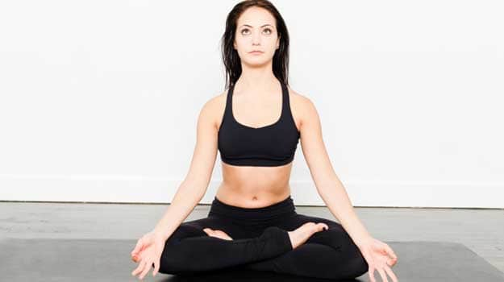

yogga poses

Sukhasna is a comfortable position for pranayama and meditation. It gives the practitioner a centering effect. All the other asnas are done to eventually make the body feel comfortable to be able to sit in this position for meditation. This asna takes the yoga practice beyond its physical dimension and helps you get in touch with your spiritual side. Sit comfortably on the mat with crossed legs (left leg tugged inside the right thigh and right leg tugged inside the left thigh). Keep spine straight. Place your hands on your knees. You can use the Jnana mudra or Chin mudra. Relax your body and breathe gently.
sukhasana pose
NEXT